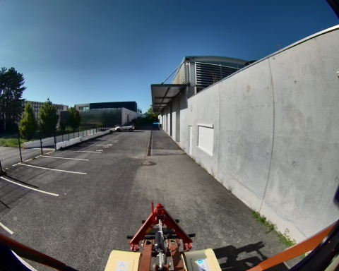
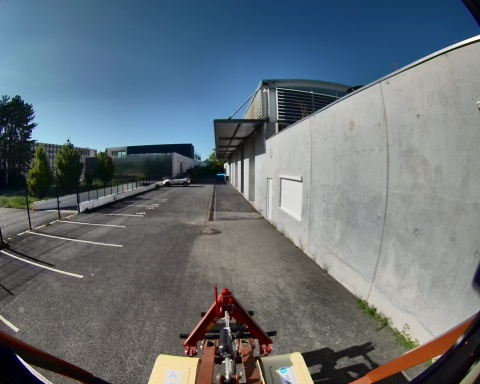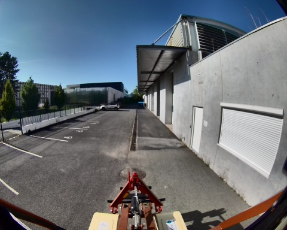

 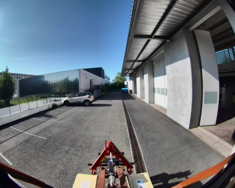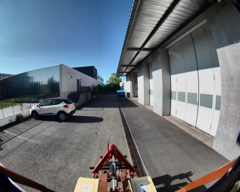
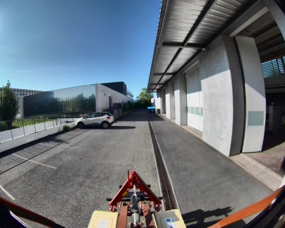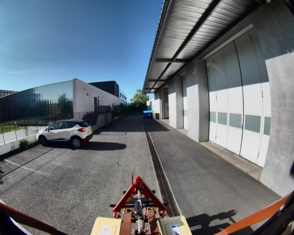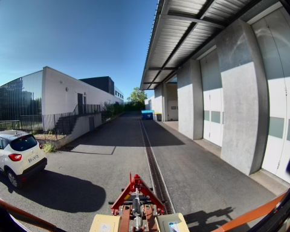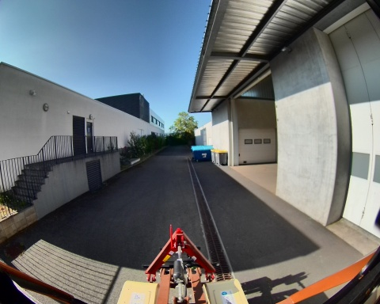
 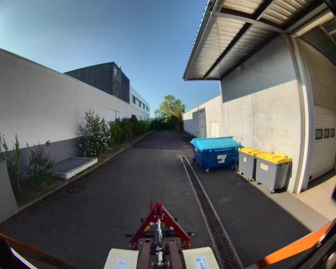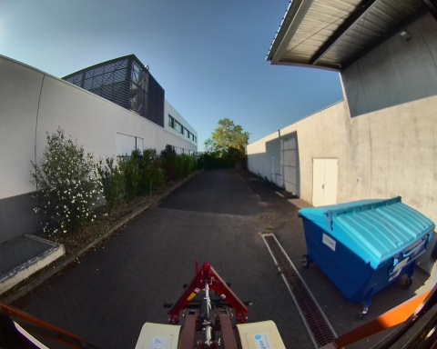
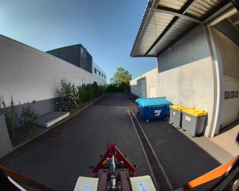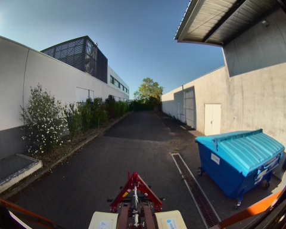
 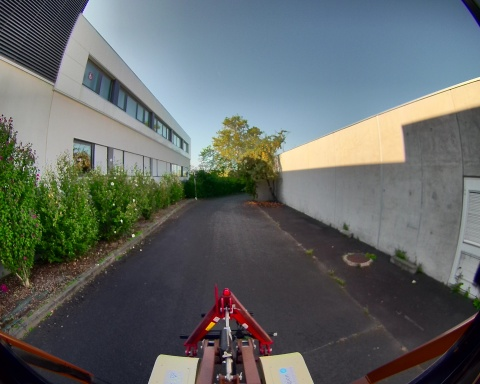
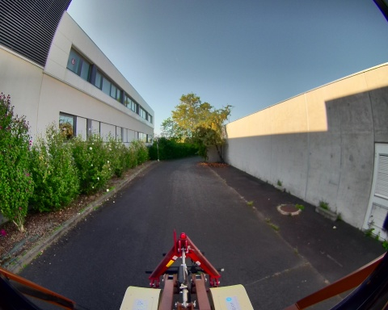 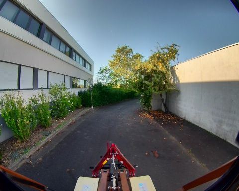
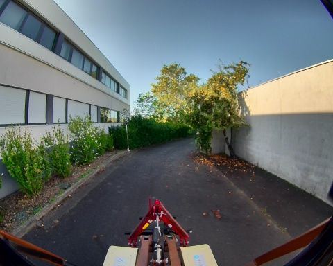Chemin complet : /data/synchro_data/Innodura/Agrivia/Données/2024_bag/slam_icp_batiment_c
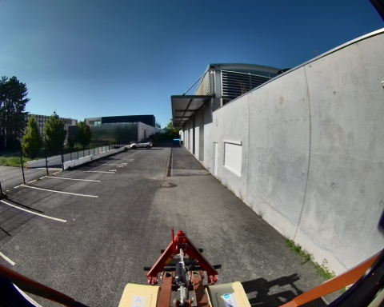
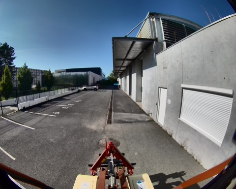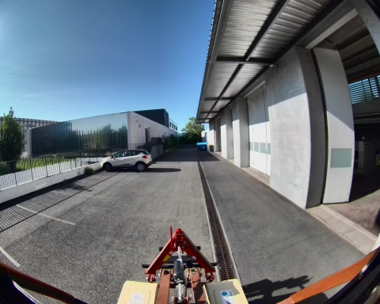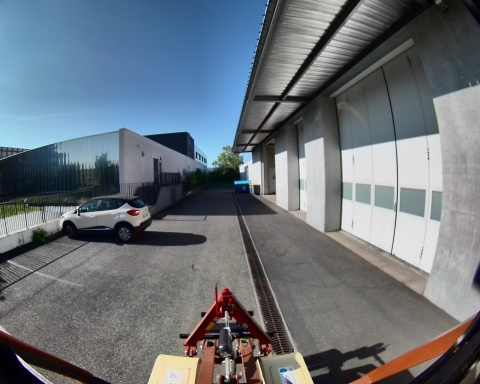
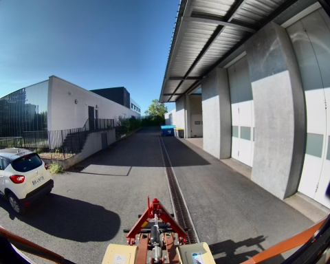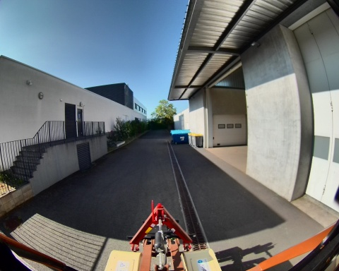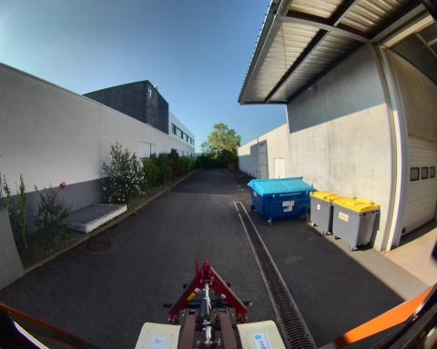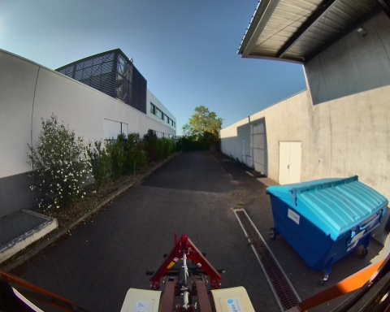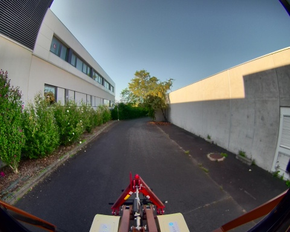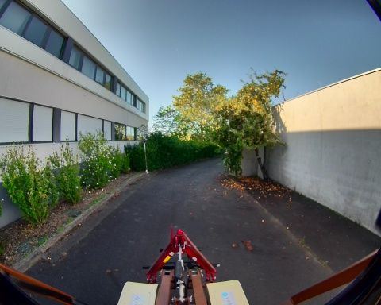
Files: slam_icp_batiment_c_0.db3
Bag size: 3.9 GiB
Storage id: sqlite3
Duration: 94.661037931s
Start: Aug 27 2024 17:27:02.561943294 (1724772422.561943294)
End: Aug 27 2024 17:28:37.222981225 (1724772517.222981225)
Messages: 951
Topic information: Topic: /alpo/camera/image_synchro | Type: sensor_msgs/msg/Image | Count: 474 | Serialization Format: cdr
Topic: /tf_static | Type: tf2_msgs/msg/TFMessage | Count: 3 | Serialization Format: cdr
Topic: /alpo/lidar/pointcloud_synchro | Type: sensor_msgs/msg/PointCloud2 | Count: 474 | Serialization Format: cdr